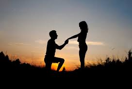

PORTRAIT PHOTOGRAPHY
A portrait is a photo of a persom or a group of people that captures the personality of the subject by using effective lighting,backdrops and projects
This is shown below.

For most people a camera might just be an ordinary machine or object used for fun and taking photos and videos.
Technically, they are not wrong, but in my opinon there's more to a camera than just a "machine" or an "ordinary object"
To me a camera is like a magical portal to another dimension. Through a lens, there's a differnt world which lies out there.
The peace that the world brings is unimagineable. It's as if your third eye has been opened to view the world differently
In conclusion, the camera does not only take photos and videos but also lots of memories
Photos can differ from each other. They include:
A portrait is a photo of a persom or a group of people that captures the personality of the subject by using effective lighting,backdrops and projects
This is shown below.
This is the taking of photographs from an aircraft or a flying object.
Platforms for aerial photography include: drones, helicopters, stand alone telescoping and many others

Wildlife photography is a genre of photography concerned with documenting various forms of wildlife in their natural habitat
Such photos are include the one below

This is usually capturing memories and events at a particular ceremony or event.
This may include events such as weddings, birthdays, parties and other social gatherings.
There are many other types of photographs other than those presented here.
All that matters in the end is the quality of the photo and the memories captured rather than the type.